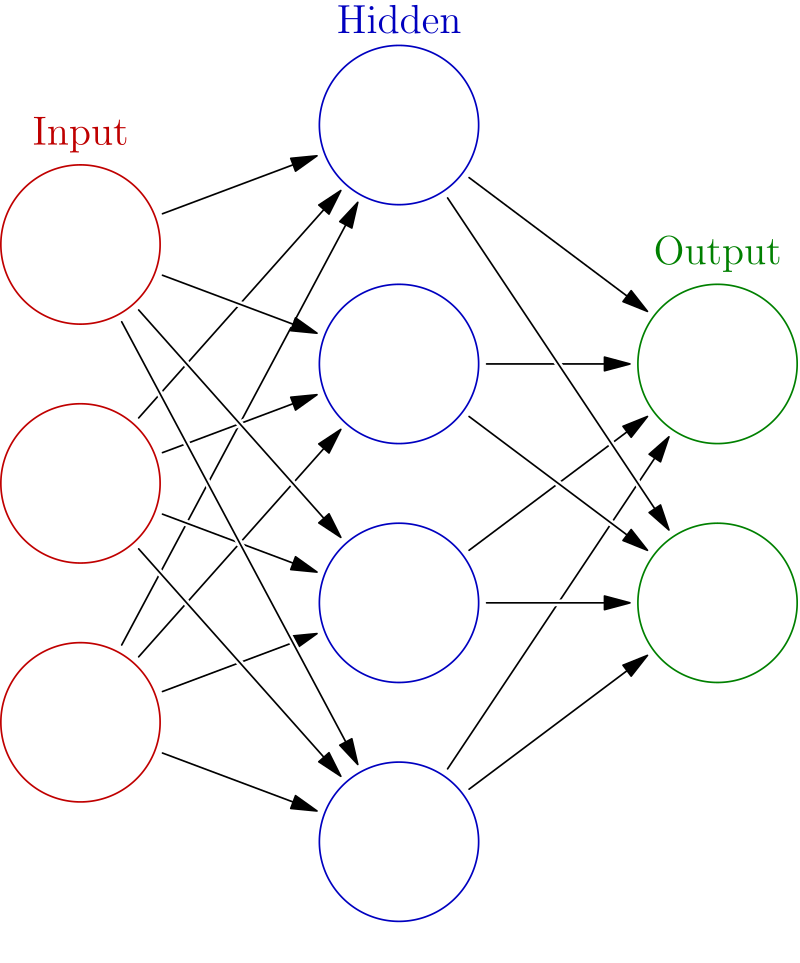

Question 1What actually is artificial intelligence?

AI is changing fast — this page covers the big ideas, but new things are happening all the time.
Always check a trusted news source for the latest updates on AI.
You've probably heard people talk about "AI" — but what does it actually mean? Artificial intelligence is when a computer is built to do things that normally require human thinking — like recognizing faces, understanding speech, or making decisions.[1]
But here's the key: most AI today doesn't "think" the way you do. It learns by looking at huge amounts of data and finding patterns. That's very different from a regular computer program, where a programmer writes every rule by hand.[2]
How the brain inspired AI
The idea behind modern AI actually comes from the human brain. Your brain has about 86 billion tiny cells called neurons. These neurons send signals to each other — and that's how you think, learn, and remember things.[3]
Geoffrey Hinton, one of the scientists who helped build modern AI, explains it like this: Think of yourself as a brain cell. Other brain cells are sending you signals — like votes. Some are voting "go ping!" (fire a signal) and some are voting "don't go ping!" If you get enough votes to go ping, you fire. The whole system learns by changing how strong those votes are.[4]
Hinton's "Go Ping" Explanation
"You have a whole bunch of brain cells, and brain cells sometimes go ping. And the question is what makes them go ping... Brain cells are listening to other brain cells going ping. And when one brain cell goes ping, it's kind of voting for whether another brain cell should go ping."
— Geoffrey Hinton, Babbage, The Economist, 2025
In the 1980s, scientists figured out how to build a version of this inside a computer. They created artificial neural networks — software that mimics the way brain cells connect and communicate. Instead of real neurons, you have virtual ones. And instead of changing real connections in your brain, the computer changes numbers called weights (the strength of the votes).[4]
🔓 Bonus Fact — Unlocked!
The word "artificial intelligence" was first used in 1956 at a summer workshop at Dartmouth College. The scientists who organized it believed that "every aspect of learning or any other feature of intelligence can in principle be so precisely described that a machine can be made to simulate it." That was almost 70 years ago — and we're still working on it!
- ^ "What is artificial intelligence (AI)?," IBM, ibm.com
- ^ "The Science That Built the AI Revolution — Part 1," Babbage, The Economist, March 6, 2024. Link
- ^ Azevedo, F.A., et al. "Equal numbers of neuronal and nonneuronal cells make the human brain an isometrically scaled-up primate brain." Journal of Comparative Neurology, 2009. PubMed
- ^ Geoffrey Hinton, interview on Babbage, The Economist, March 12, 2025. Link
Question 2How does a machine actually learn things?

When you learn something new, your brain strengthens certain connections between neurons. When a machine learns, it does something surprisingly similar — it adjusts the weights (connection strengths) between artificial neurons until it gets better at its task.[1]
Learning by example
Imagine you want to teach a computer to tell the difference between a cat and a dog in photos. You don't write rules like "cats have pointy ears." Instead, you show it thousands of photos of cats and dogs, each labeled. Every time it guesses wrong, it adjusts its internal connections so it's less likely to make the same mistake again. After seeing enough examples, it learns the patterns on its own.[1]
This process is called training, and the method that makes it work is called backpropagation. Geoffrey Hinton, one of its inventors, describes it simply: you send signals backwards through the network to tell each connection how to change so the network gets better at predicting the right answer.[2]
The magic of patterns
Here's where it gets wild. When a neural network learns words, it turns each word into a big list of numbers — called a vector. Words with similar meanings end up with similar numbers. And you can actually do math with them.
Paris − France + Italy = Rome
If you take the number pattern for "Paris," subtract the pattern for "France," and add the pattern for "Italy" — you get a pattern that's closest to "Rome." The AI learned the relationship between countries and capitals entirely on its own, just from reading text.[2]
Hinton demonstrated another example of this pattern-matching. He asked people: which seems more likely — that all dogs are male and all cats are female, or the other way around? Almost everyone says dogs are male and cats are female — even though it's complete nonsense. Why? Because in our language and culture, the patterns associated with "dog" are more similar to the patterns associated with "male." Neural networks pick up on exactly the same patterns.[2]
Understanding from context — in one example
Hinton likes to test this with a fun sentence: "She screamed him with the frying pan." You've never seen "screamed" used as a verb meaning "to hit" — but you instantly know what it means from context. That's exactly how modern AI understands language: not by memorizing definitions, but by figuring out meaning from how words are used together.[2]
Think about it
If AI learns language the same way you do — by picking up patterns from context — does that mean it "understands" language? Or is it just really good at faking it?
Question 3What suddenly made AI so powerful?

For decades, most computer scientists thought neural networks were a dead end. Geoffrey Hinton remembers: "People in computer science thought neural nets were nonsense. I'm very confident about that."[1] So what changed?
Three things came together at once — and they transformed AI from a niche research topic into the most talked-about technology in the world.
1. Massive datasets
In 2009, Stanford professor Fei-Fei Li and her team released ImageNet — a database of more than 14 million images, each labeled by hand. For the first time, neural networks had enough examples to learn from. Before ImageNet, AI researchers had been trying to teach computers to see with just a few thousand images. It was like trying to learn a language from a single page of a book.[2]
2. Powerful computer chips (GPUs)
Training a neural network requires doing billions of math calculations. Regular computer processors (CPUs) weren't fast enough. But a different kind of chip — the GPU (graphics processing unit) — originally designed for video games, turned out to be perfect for neural networks. One of Hinton's students, Alex Krizevsky, "managed to make Nvidia GPUs talk to each other" and built a system that was dramatically faster than anything before.[1]
3. AlexNet — the big bang moment (2012)
In 2012, Hinton's two students — Alex Krizevsky and Ilya Sutskever (who later co-founded OpenAI) — entered the annual ImageNet competition. Their system, called AlexNet, used deep neural networks trained on GPUs. It cut the error rate roughly in half compared to every other system.[1]
The result that changed everything
AlexNet "finally convinced all the people doing computer vision that what they were doing was wrong and they should do neural nets." — Geoffrey Hinton[1]
The auction in the casino
After AlexNet's success, Hinton and his two students set up a company — and every major tech company wanted to buy it. Since they had "absolutely no idea" what they were worth, a friend suggested they run an auction.
A $44 million poker game
"Our standard neural net conference was happening in a casino in Lake Tahoe... on the ground floor they had this casino with people pulling one-armed bandits and smoking. And upstairs in our hotel room, we were running this auction where you had to raise by $1 million... we were raking in $1 million every half hour, which is quite fun in a casino." Google won the auction for $44 million. Years later, a senior VP told Hinton "they were amazed that they got it so cheaply."[1]
Hinton compared the resistance to neural networks to another famous example in science: Continental Drift. In the early 1900s, a scientist noticed that South America and Africa fit together like puzzle pieces. He had strong evidence — matching rock formations, similar fossils on both sides of the Atlantic. But geologists dismissed him because they believed the Earth was rigid. "It was like that," Hinton says. The evidence was right there, but the established experts couldn't see it.[1]
- ^ Geoffrey Hinton, interview on Babbage, The Economist, March 12, 2025. Link
- ^ "The Science That Built the AI Revolution — Part 3," Babbage, The Economist, March 20, 2024. Link. See also: ImageNet, image-net.org
Question 4Where is AI today — and what can it do?

For decades, AI was something only scientists and engineers thought about. Then, on November 30, 2022, a company called OpenAI released a chatbot called ChatGPT (short for "Chat Generative Pre-trained Transformer") — and everything changed. Within two months, 100 million people were using it, making it the fastest-growing consumer application in history.[1]
ChatGPT is an example of a Large Language Model (LLM) — an AI trained on enormous amounts of text from the internet. It doesn't "know" facts the way you do. Instead, it predicts what word should come next, based on patterns it learned during training. Hinton built a tiny version of this back in the 1980s, but today's LLMs have billions of parameters (adjustable settings that control how the AI responds) and are trained on trillions of words.[2]
Generative AI — machines that create
Today's AI doesn't just analyze data — it creates new things. It can write essays, generate realistic images, compose music, and even write code. This is called generative AI. Tools like ChatGPT (text), DALL-E and Midjourney (images), and Suno (music) are examples.[3]
This has raised huge questions. If AI can write a school essay, what does that mean for learning? If it can create a photo of a person who doesn't exist, how do we know what's real? These are some of the biggest questions of our time.
Hallucinations — or as Hinton calls it, "confabulation"
One of the biggest problems with AI chatbots is that they sometimes make things up — stating "facts" that are completely wrong but sound convincing. Most people call this hallucination. But Hinton says that's actually evidence that AI works more like the human brain than we thought.[2]
"You don't store any strings of words in your head"
"Most people have a completely wrong model of what memory is. They think of memory as like a file on a computer. You put the file somewhere, and then when you want it back, you go fetch it. That's not how memory works in people at all... When you want to recall something, what you do is you generate it. You make it up."[2]
— Geoffrey Hinton, Babbage, 2025
Hinton says AI chatbots are "a bit worse than us at present" at noticing their mistakes — but the newest models, like DeepSeek and OpenAI's reasoning models, can now produce "strings of words that are their thinking" and then reflect on them to catch errors. "They're getting to the stage when they're going to be as good as people at noticing when they're making it up."[2]
Think about it
If human memory is also a kind of "making things up" based on patterns — how confident should we be in our own memories? And how should that change the way we judge AI?
🔓 Bonus Fact — Unlocked!
In January 2025, a Chinese AI company called DeepSeek released a model that rivaled the most expensive American models — but built it for a fraction of the cost. It shocked the tech industry and caused Nvidia's stock to drop $600 billion in a single day. The AI race isn't just between companies — it's between countries.
FocusAI & Your School — What Changes?
This might be the section that matters most to you — because AI is already changing how schools work, and your generation is the first to deal with it.
In April 2025, the Center for Humane Technology podcast Your Undivided Attention brought together two experts to talk about exactly this: Maryanne Wolf, a brain scientist who studies how we learn to read, and Rebecca Winthrop, an expert on education from a research center called Brookings.[1]
Key takeaways
Past tech in classrooms often failed. Every generation gets excited about a new technology transforming education — radio, TV, desktop computers, iPads. But research from the OECD (a group of 38 countries that study education policy) found that just putting computers in classrooms didn't actually help students learn better.[2]
Screens affect how your brain develops. A major medical study (published in JAMA, one of the world's top medical journals) found that too much screen time can slow down how quickly young kids learn to talk. Another study in Singapore found that students who spent too much time on screens had a harder time paying attention.[3]
But this moment is also an opportunity. Rather than fighting AI or pretending it doesn't exist, both experts argued that schools should redesign around the skills AI can't replicate: curiosity, creativity, critical thinking, collaboration, and genuine human connection. The question isn't "how do we stop students from using AI?" — it's "how do we build schools that develop the parts of you that AI can't replace?"[1]
Human connection matters more than task completion. Wolf emphasized that the deepest learning happens through relationships — a great teacher who sees what you're misunderstanding and gives you exactly the right nudge. AI tutors may eventually get good at this, but right now, the human element is irreplaceable.[1]
Think about it
Your generation is the first to go through school with AI tools that can write essays, summarize readings, and solve problems for you. Does using AI to do your homework help you learn — or does it skip the part where learning actually happens?
- ^ "Rethinking School in the Age of AI," Your Undivided Attention, Center for Humane Technology, April 21, 2025. Guests: Maryanne Wolf, Rebecca Winthrop. Link
- ^ OECD, "Students, Computers and Learning: Making the Connection," 2015. Link
- ^ Madigan, S., et al., "Association Between Screen Time and Children's Performance on a Developmental Screening Test," JAMA Pediatrics, 2019. PubMed
Focus: Talking to Animals Using AI
From the Center for Humane Technology podcast
Key takeaways
AI is learning to decode animal communication. The Earth Species Project, a nonprofit founded by Aza Raskin and Britt Selvitelle, is using machine learning to find patterns in animal vocalizations that humans can't detect. Their goal is to translate animal communication — not just identify species by sound, but understand what animals are actually saying to each other.[1]
Scientists expect to synthesize animal calls within years. Raskin predicted that within 12 to 36 months (from May 2023), AI would be able to generate synthetic animal vocalizations — like whale songs or monkey calls — that are indistinguishable from real ones. This could let researchers "speak back" to animals for the first time in history.[1]
This could save lives — literally. One practical application: playing whale calls to redirect whales away from shipping lanes, preventing deadly ship strikes. Over 20,000 whales are estimated to be killed by ship strikes worldwide each year. AI-generated calls could warn them away from danger.[2]
But there are serious risks. The same technology that could protect animals could be used to exploit them. Poachers could use synthetic bird calls to lure endangered species. Ecotourism operators could manipulate wildlife behavior for profit. And we might project human meanings onto animal communication in ways that aren't accurate — a problem researchers call "anthropomorphism."[1]
Animal "language" is more complex than we thought. Researchers found that a type of monkey called the gelada makes sounds with a rhythm that's surprisingly similar to how humans talk. And across many species, certain sounds seem to carry similar meanings — scientists call this "sound symbolism." This suggests communication systems far more sophisticated than simple alarm calls.[3]
Think about it
If we could talk to animals, should we? What would it mean for conservation — and what could go wrong if the wrong people got access to this technology?
- ^ "Talking With Animals Using AI," Your Undivided Attention, Center for Humane Technology, May 4, 2023. Guests: Aza Raskin, Britt Selvitelle. Link
- ^ Rockwood, L., et al., "Estimating global whale mortality from vessel strikes," Marine Policy, 2017. See also: NOAA, "Reducing Ship Strikes to North Atlantic Right Whales." NOAA Link
- ^ Bergman, T.J., "Speech-like Rhythm in a Voiced and Voiceless Primate Communication System," PLOS ONE, 2013. Link
Focus: The Godfather's Warning
Geoffrey Hinton on the future of AI — The Economist, March 2025
Who is Geoffrey Hinton?
Geoffrey Hinton spent over 40 years working on neural networks — the technology behind modern AI — when almost nobody believed it would work. For decades, the mainstream AI community dismissed his research as a dead end. Then, in 2012, his student's system called AlexNet crushed the competition in an image recognition contest, and everything changed. As Hinton described it: "It felt validating. It feels like all those years of doing something that people thought was nonsense were okay."[1]
Hinton went on to work at Google, where his research helped build the AI systems we use today. In 2024, he won the Nobel Prize in Physics for his foundational work on neural networks. But in 2023, he did something unexpected — he quit Google specifically so he could speak freely about the dangers of the technology he helped create.[2]
Key insights from the interview
"Hallucinations" mean AI is more like us than we thought. When AI makes things up, most people see it as a bug. Hinton sees it differently: "What that tells us is they're even more like us than we thought." He explained that human memory works the same way — we don't store exact recordings of experiences. "You don't store any strings of words in your head... you make it up." The technical term for this is "confabulation," and humans do it all the time.[1]
The cucumber experiment. Hinton described a fascinating study about short-term memory: if someone says a word very faintly — so faintly you can barely hear it — you're more likely to understand it correctly if someone said that same word five minutes earlier. Your brain stored a trace of the word even though you weren't trying to remember it. AI systems show similar behavior.[1]
Only about 1% goes into safety. Hinton warned that AI companies are spending almost all their resources on making AI more powerful and almost nothing on making it safe: "It's probably 1% goes into safety... governments need to force them to work on safety." He compared this to the early days of the drug-making industry, before governments required companies to test medicines for safety.[1]
The best case and the worst case are both real possibilities. Hinton described two plausible futures. In the best case, AI dramatically improves healthcare, education, and scientific research — helping us solve problems we couldn't solve before. In the worst case, AI could become smarter than humans and start working toward goals we didn't choose — or powerful leaders could use it to spy on people and build weapons that operate on their own. His honest assessment: "I sort of believe both those things are quite plausible."[1]
Think about it
Geoffrey Hinton helped create the technology behind modern AI — and then quit his job to warn people about it. When is it an inventor's responsibility to speak up about the risks of what they've built?
- ^ "AI Is More Human Than You Think: An Interview With Geoffrey Hinton," Babbage, The Economist, March 12, 2025. Link
- ^ "Geoffrey Hinton," Nobel Prize in Physics 2024, The Nobel Foundation. nobelprize.org
📅 Timeline of AI
From a thought experiment to a technology that's changing everything
1950 — The Turing Test
Alan Turing publishes "Computing Machinery and Intelligence," asking: "Can machines think?" He proposes the Turing Test — if a machine can fool a human into thinking it's human, it can be considered intelligent.[1]
1957 — The First Neural Network
Frank Rosenblatt at Cornell builds the Perceptron — the first machine that could learn from examples. It was inspired by how neurons in the brain connect to each other.[2]
1969 — The First AI Winter
Marvin Minsky and Seymour Papert publish Perceptrons, a book arguing that neural networks have fundamental limitations. Funding for neural network research dries up for over a decade.[3]
1986 — Backpropagation
Geoffrey Hinton, David Rumelhart, and Ronald Williams publish their paper on backpropagation — a way for neural networks to learn from their mistakes by adjusting connections backward through the network. This becomes the foundation of all modern deep learning.[4]
1997 — Deep Blue Beats Kasparov
IBM's Deep Blue defeats world chess champion Garry Kasparov. It's a milestone, but Deep Blue used brute-force calculation — not the learning approach that would later define modern AI.[5]
2009 — Neural Nets Beat Speech Recognition
Hinton's team at the University of Toronto proves that neural networks can outperform traditional methods at recognizing speech — the first sign that the "dismissed" technology was about to take over.[6]
2011 — Watson Wins Jeopardy!
IBM's Watson beats two all-time Jeopardy! champions. Unlike Deep Blue, Watson had to understand natural language — puns, wordplay, and tricky clues.[7]
2012 — AlexNet: The Big Bang 💥
Hinton's student Alex Krizhevsky builds AlexNet, a deep neural network that crushes the annual ImageNet image recognition competition. Error rates drop by 10 percentage points overnight. This is the moment the AI revolution truly begins.[8]
2013 — Google Buys Hinton's Company
Google, Microsoft, and Baidu get into a bidding war for Hinton's tiny company. Google wins for $44 million. Hinton later recalled that the buyers "were amazed they got it so cheaply."[6]
2014 — GANs: AI Learns to Create
Ian Goodfellow invents Generative Adversarial Networks (GANs) — two neural networks competing against each other, one creating fake images and one trying to detect them. This is the birth of AI-generated images.[9]
2016 — AlphaGo Shocks the World
DeepMind's AlphaGo defeats Lee Sedol, one of the greatest Go players ever. Go has more possible positions than atoms in the universe — brute force was impossible. AlphaGo had to develop intuition.[10]
2017 — "Attention Is All You Need"
A team at Google publishes the Transformer paper. This new architecture — based on an "attention" mechanism that lets AI focus on relevant words in a sentence — becomes the foundation for ChatGPT, Gemini, and every major language model.[11]
2020 — GPT-3 Released
OpenAI releases GPT-3, a language model with 175 billion parameters that can write essays, code, poetry, and more. Researchers are stunned by its capabilities — and worried about misuse.[12]
2022 — ChatGPT Goes Viral
OpenAI launches ChatGPT in November. It reaches 100 million users in just two months — the fastest-growing consumer technology in history. AI goes from a research topic to a household word overnight.[13]
2023 — The AI Race Explodes
GPT-4, Google's Gemini, Meta's LLaMA, and dozens of open-source models launch. AI can now pass the bar exam, write code, and generate photorealistic images. Hinton quits Google to warn about AI risks.[14]
2024 — Nobel Prizes for AI
Geoffrey Hinton and John Hopfield win the Nobel Prize in Physics for neural network research. Demis Hassabis wins the Nobel Prize in Chemistry for AlphaFold, which predicted the shape of nearly every known protein.[15]
2025 — Reasoning Models & Regulation
China's DeepSeek and new "reasoning models" show AI systems that can think step-by-step. Governments worldwide debate AI regulation. As Hinton put it: "They can produce strings of words that are their thinking."[6]
2026 — The Conversation Continues
AI is in your school, your phone, your doctor's office. The question is no longer "will AI change the world?" — it's "how do we make sure it changes it for the better?"
- ^ Turing, A.M., "Computing Machinery and Intelligence," Mind, 1950. Oxford Academic
- ^ "The Perceptron: A Perceiving and Recognizing Automaton," Cornell Aeronautical Laboratory, 1957. Wikipedia
- ^ Minsky, M. & Papert, S., Perceptrons, MIT Press, 1969. Wikipedia
- ^ Rumelhart, D., Hinton, G. & Williams, R., "Learning representations by back-propagating errors," Nature, 1986. Nature
- ^ "Deep Blue," IBM Archives. IBM
- ^ "AI Is More Human Than You Think: An Interview With Geoffrey Hinton," Babbage, The Economist, March 12, 2025. Economist
- ^ "Watson," IBM. IBM; "Smartest Machine on Earth," PBS Nova, 2011.
- ^ Krizhevsky, A., Sutskever, I. & Hinton, G., "ImageNet Classification with Deep Convolutional Neural Networks," NeurIPS, 2012. NeurIPS
- ^ Goodfellow, I., et al., "Generative Adversarial Nets," NeurIPS, 2014. arXiv
- ^ Silver, D., et al., "Mastering the game of Go with deep neural networks and tree search," Nature, 2016. Nature
- ^ Vaswani, A., et al., "Attention Is All You Need," NeurIPS, 2017. arXiv
- ^ Brown, T., et al., "Language Models are Few-Shot Learners," OpenAI, 2020. arXiv
- ^ Hu, K., "ChatGPT sets record for fastest-growing user base," Reuters, Feb 2, 2023. Reuters
- ^ "Geoffrey Hinton quits Google to warn of AI dangers," BBC News, May 2, 2023. BBC
- ^ "The Nobel Prize in Physics 2024," The Nobel Foundation. nobelprize.org; "The Nobel Prize in Chemistry 2024." nobelprize.org
👤 Key People in AI
The researchers, inventors, and critics shaping artificial intelligence

Alan Turing
Father of Computer Science
Created the concept of a "universal machine" and proposed the Turing Test in 1950 — the idea that a machine is intelligent if it can fool a human in conversation. His work laid the theoretical foundation for all of computing.[1]

Geoffrey Hinton
"Godfather of AI"
Pioneered backpropagation and deep learning over 40+ years when most researchers dismissed neural networks. Won the 2024 Nobel Prize in Physics. Quit Google in 2023 to warn about AI risks.[2]

Fei-Fei Li
Computer Vision Pioneer
Created ImageNet, the massive dataset of 14 million labeled images that proved neural networks could "see." Without ImageNet, the 2012 AlexNet breakthrough might never have happened. Now a professor at Stanford and advocate for human-centered AI.[3]

Yoshua Bengio
Deep Learning Pioneer
Helped develop foundational ideas behind modern language models and neural networks. Won the 2018 Turing Award (the "Nobel Prize of computing") alongside Hinton and Yann LeCun. Now a leading voice for AI safety research.[4]
Sam Altman
CEO of OpenAI
Leads the company behind ChatGPT, the AI chatbot that brought artificial intelligence to the mainstream in 2022. Under his leadership, OpenAI grew from a small research lab to one of the most influential tech companies in the world.[5]

Timnit Gebru
AI Ethics Researcher
Studies bias and fairness in AI systems. Co-authored landmark research showing facial recognition works worse on darker-skinned faces. Founded the DAIR Institute after a high-profile departure from Google, becoming a leading voice for responsible AI.[6]

Demis Hassabis
DeepMind Founder
Founded DeepMind, the lab behind AlphaGo and AlphaFold. AlphaFold predicted the 3D shape of nearly every known protein — a problem scientists had struggled with for 50 years. Won the 2024 Nobel Prize in Chemistry.[7]
- ^ "Alan Turing," Encyclopaedia Britannica. Britannica
- ^ "Geoffrey Hinton," Nobel Prize in Physics 2024, The Nobel Foundation. nobelprize.org
- ^ "Fei-Fei Li," Stanford University HAI. Stanford HAI
- ^ "ACM A.M. Turing Award: Yoshua Bengio," Association for Computing Machinery, 2018. ACM
- ^ "Sam Altman," OpenAI. OpenAI
- ^ Buolamwini, J. & Gebru, T., "Gender Shades: Intersectional Accuracy Disparities in Commercial Gender Classification," Proceedings of Machine Learning Research, 2018. MLR Press
- ^ "Demis Hassabis," Nobel Prize in Chemistry 2024, The Nobel Foundation. nobelprize.org
📺 Videos & Podcasts
Watch, listen, and go deeper into the world of AI
🎬 Videos
Crash Course AI #1: What Is Artificial Intelligence? 12 min
3Blue1Brown: But what is a neural network? 19 min
TED-Ed: How does artificial intelligence learn? 5 min
PBS NewsHour: What is generative AI? 6 min
🎧 Podcasts
These are the podcast episodes that this page is built on. Listen to go deeper on any topic.
The Economist: "The Science That Built the AI Revolution" (4 parts)
Part 1 shown above. Parts 2-4 are embedded in each section throughout the page.
The Economist: Geoffrey Hinton Interview (March 2025)
Center for Humane Technology: "Rethinking School in the Age of AI"
Center for Humane Technology: "Talking With Animals Using AI"
📚 Resources — Ranked Reading
Explore more about AI at your own pace — organized by reading level
Reading levels
Labels: ⭐ Easier = great starting point · ⭐⭐ Medium = some reading required · ⭐⭐⭐ Harder = for students who want a deeper challenge
Crash Course AI (Full Series)
20 episodes covering everything from what AI is to ethics and the future. Fun, fast-paced, student-friendly.
PBS LearningMedia: AI Lessons
Free classroom-ready lessons and videos about artificial intelligence from PBS. Designed for middle schoolers.
Code.org: AI & Machine Learning
Interactive activities that let you train your own AI model. No coding experience needed — just curiosity.
Google AI Experiments
Play with AI in your browser — draw with a neural network, make music, or teach a machine to recognize objects.
NPR: Artificial Intelligence Coverage
Balanced, accessible reporting on how AI is changing work, school, healthcare, and society.
BBC News: AI Coverage
Excellent global perspective on AI developments, from regulation in Europe to AI in developing countries.
Your Undivided Attention Podcast
Deep conversations about how technology affects us. The AI & School and AI & Animals episodes are great starting points.
Vox: AI Explained
Clear, visual explainers that break down complex AI topics. Good for understanding the big picture.
The Economist: AI Coverage
In-depth analysis of AI's impact on the global economy, politics, and science. The source behind much of this page.
Stanford HAI: AI Index Report
Annual report tracking AI progress worldwide. Charts, data, and analysis from one of the top AI research universities.
MIT Technology Review: AI Section
Cutting-edge reporting on AI research and applications from MIT. For students ready for a real challenge.
3Blue1Brown: Neural Networks
Beautiful math visualizations that explain exactly how neural networks learn. Best for students who like math.